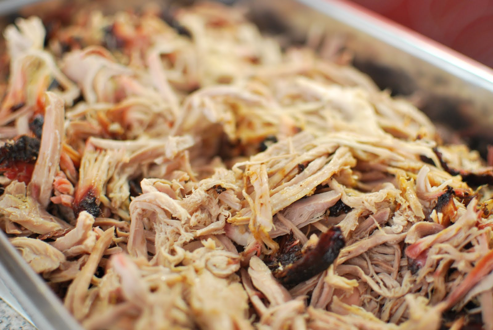

Pulled Pork

Description
Eastern-style barbecue is a whole-hog style of barbecue, often said to use "every part of the hog except the squeal". Eastern-style sauce is vinegar and pepper-based, with no tomato whatsoever. Eastern sauce is mostly used as a seasoning after the cook (although it can also be used as a mop sauce while the hog is cooking). The coleslaw served with eastern-style uses mayonnaise (or whipped salad dressing) almost universally.
Ingredients
- 1 fresh pork butt, bone-in (this is the butt, or top portion, of the shoulder)
- Kosher salt
- 2 cups apple cider vinegar
- 2 tablespoons crushed red pepper
- 1/2 tablespoon chopped fresh garlic
- 1/2 tablespoon kosher salt
- 1 tablespoon freshly ground black pepper
Steps
- Trim the excess fat from the pork butt.
- Slather the pork butt with yellow mustard, then apply a generous coating of rub.
- Wrap the pork butt in plastic wrap and place in the refrigerator overnight.
- Prepare the mopping sauce by combining all of the mop sauce ingredients in a lidded container. Shake to combine.
- When ready to cook, heat your smoker to 250 degrees. Smoke the pork butt until the bark is set. This typically occurs at roughly an internal temperature of 165-185 degrees, but will depend on the rub.
- Once the bark is set, begin mopping the pork butt with the mopping sauce each hour. Increase the mopping frequency to every 30 minutes once you reach 185 degrees.
- If using an instant read thermometer, remove the pork butt from the smoker when it is probe tender. If only using an indwelling meat thermometer this is typically between 203-205 degrees. The bone should pull out cleanly from the pork butt at this point. Total cook time is typically 8-10 hours but can vary greatly, so monitor the meat temp.
- Wrap the pork but in foil and rest for at least to hours in a cooler filled with towels, a Cambro, or an oven set to about 150-160 degrees.
- At the end of the rest, pull the pork apart with forks or with insulated gloves. Combine with any juices left in the foil.
- Serve with a side of the vinegar (mopping) sauce and enjoy.